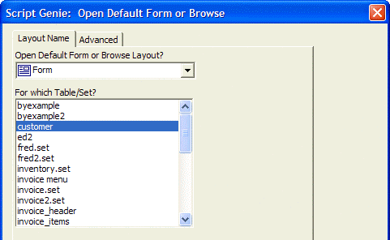
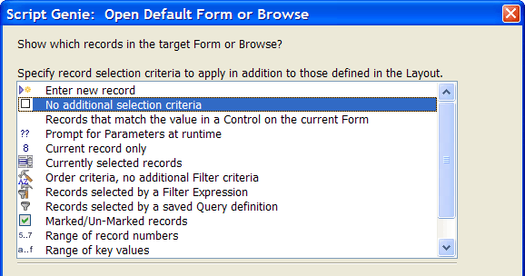
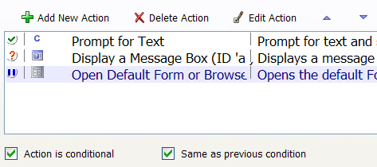

Using the "Same Condition as Previous" Setting
If an Action uses the same condition as the action before it, there is a simple technique to copy the condition.
Add a third Action to your Action Script that opens the Default Form for the Customer table. This action will be conditional, using the same condition as the "Display a Message Box" Action.
If you're not already editing the Lesson1 script, open it in the Code Editor.
Select the "Display a Message Box" Action.
Click the Add New Action button.
Select the "Form/Browse" category and the "Open Default Form or Browse" Action. Click OK to select this Action. Alpha Anywhere displays the Open Default Form or Browse Genie.

To open the default form for the Customer table, select "customer" in the For which Table/Set? list and click Next >.

We want the default form to show all records. Select "No additional selection criteria" then click Next > and Finish to complete the Action.
Check the Action is conditional and Same as Previous condition fields. Note that the icon to the left of "Open Default Form or Browse" is now a "ditto" mark, indicating that the action's condition is the same as the previous Action's condition.

 Note : The Same as Previous
condition field only appears when the action immediately above
it is conditional. If you select the "Display a Message Box"
action, the prompt disappears.
Note : The Same as Previous
condition field only appears when the action immediately above
it is conditional. If you select the "Display a Message Box"
action, the prompt disappears.
Save your script and run it to test it. You will see the form is only opened if you enter a non-null value at the first prompt.
Click the View Xbasic button again to see all the work Action Scripting has automated for you.